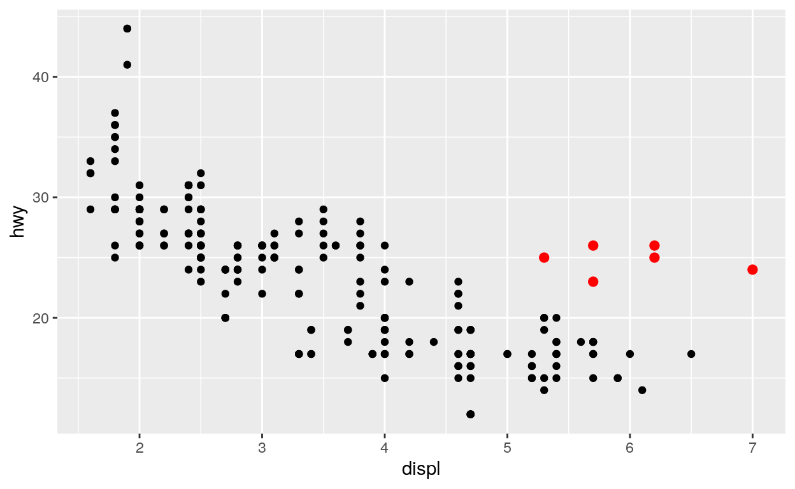
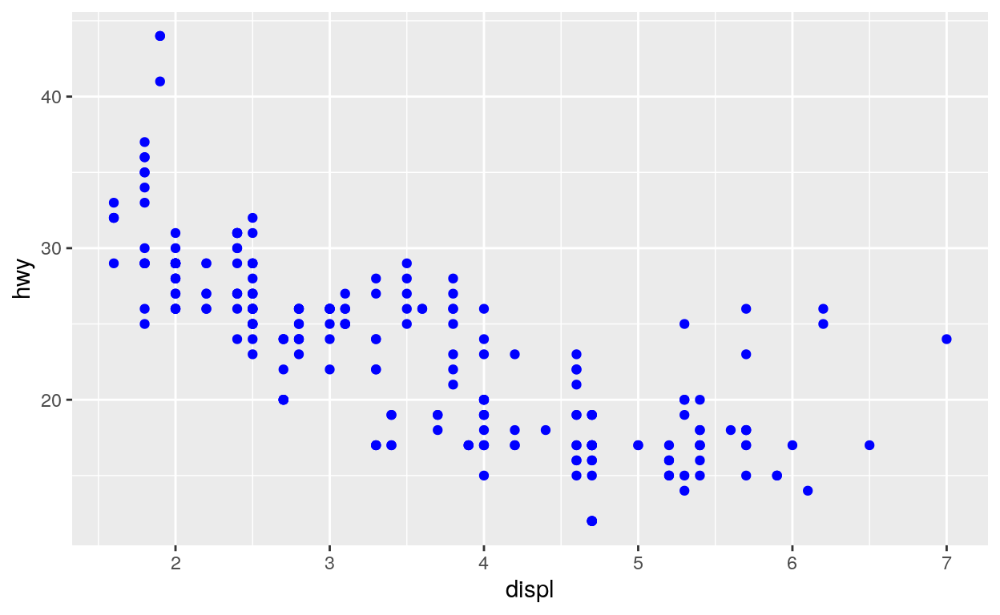
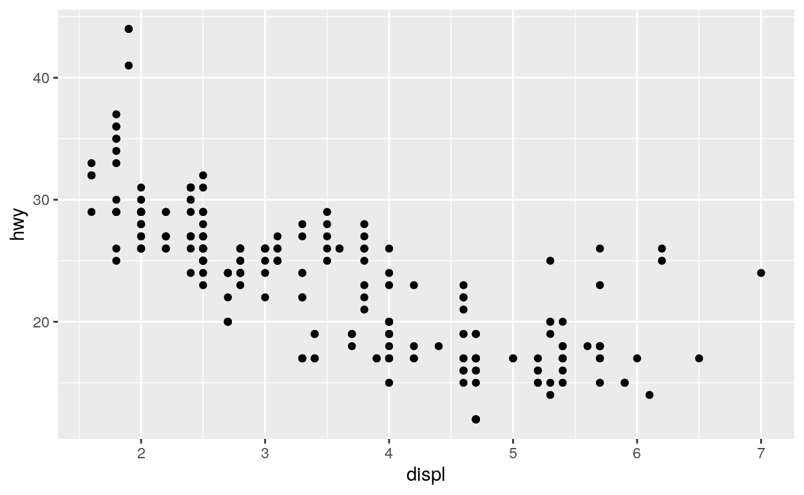
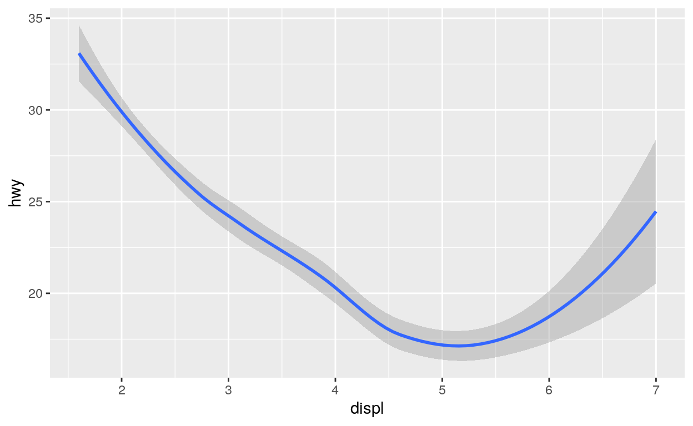

Welcome
Data visualization is one of the most important tools for data science. It is also a great way to start learning R; when you visualize data, you get an immediate payoff that will keep you motivated as you push through the initial frustrations of learning a language.
This tutorial will teach you how to begin visualizing data with ggplot2, which is one of the most popular packages in R for visualizing data. The tutorial focuses on three essential skills:
- How to create graphs with a reusable ggplot2 template
- How to add variables to a graph with aesthetics
- How to select the “type” of your graph with geoms
These skills will quickly add visualization to your data science toolkit. You can expand on them later with RStudio awesome Visualize Data primer.
Acknowledgments
This tutorial is copied from Rstudio primers and distributed in this package only for convenience purpose. The lessons they write are superb and it’s much smarter to stand on the shoulders of giants and give them proper credit than to write copycats.
These examples are excerpted from R for Data Science by Hadley Wickham and Garrett Grolemund, published by O’Reilly Media, Inc., 2016, ISBN: 9781491910399. You can purchase the book at shop.oreilly.com.
This tutorial uses the core tidyverse packages, including ggplot2, which have been pre-loaded for your convenience.
A code template
“The simple graph has brought more information to the data analyst’s mind than any other device.” — John Tukey
Query
Let’s begin the tutorial with a question to explore.
mpg
You can test your answer with two things: the mpg dataset that comes in ggplot2 and a plot. mpg contains observations collected on 38 models of cars by the US Environmental Protection Agency. Among the variables in mpg are:
displ, a car’s engine size, in liters.hwy, a car’s fuel efficiency on the highway, in miles per gallon (mpg).A car with a low fuel efficiency consumes more fuel than a car with a high fuel efficiency when they travel the same distance.
To see the mpg data frame, type mpg in the code block below and click “Submit Answer”.
mpg"Good job! We'll use interactive code chunks like this throughout these tutorials. Whenever you encounter one, you can click Submit Answer to run (or re-run) the code in the chunk. If there is a Solution button, you can click it to see the answer. Now let's use this data to make our first graph."A plot
The code below uses functions from the ggplot2 package to plot the relationship between displ and hwy.
Let’s look at the plot and then talk about the code itself. To see the plot, click “Submit Answer” to run the code below.
ggplot(data = mpg) +
geom_point(mapping = aes(x = displ, y = hwy))"Excellent! Can you spot the relationship?"And the answer is…
The plot shows a negative relationship between engine size (displ) and fuel efficiency (hwy). Points that have a large value of displ have a small value of hwy and vice versa.
In other words, cars with big engines use more fuel. If that was your hypothesis, you were right!
Now let’s look at how we made the plot.
ggplot()
Here’s the code that we used to make the plot. Notice that it contains three functions: ggplot(), geom_point(), and aes().
ggplot(data = mpg) +
geom_point(mapping = aes(x = displ, y = hwy))The first function, ggplot(), creates a coordinate system that you can add layers to. The first argument of ggplot() is the dataset to use in the graph.
By itself, ggplot(data = mpg) creates an empty graph, but it is not very interesting so I’m not going to show it here.
geom_point()
ggplot(data = mpg) +
geom_point(mapping = aes(x = displ, y = hwy))geom_point() adds a layer of points to the empty plot created by ggplot(). As a result, we get a scatterplot.
mapping = aes()
ggplot(data = mpg) +
geom_point(mapping = aes(x = displ, y = hwy))geom_point() takes a mapping argument, which defines which variables in your dataset are mapped to which axes in your graph. The mapping argument is always paired with the function aes(), which you use to gather together all of the mappings that you want to create.
Here, we want to map the displ variable to the x axis and the hwy variable to the y axis, so we add x = displ and y = hwy inside of aes() (and we separate them with a comma). Where will ggplot2 look for these mapped variables? In the data frame that we passed to the data argument, in this case, mpg.
A graphing workflow
Our code follows the common workflow for making graphs with ggplot2. To make a graph, you:
- Start the graph with
ggplot() - Add elements to the graph with a
geom_function - Select variables with the
mapping = aes()argument
A graphing template
In fact, you can turn our code into a reusable template for making graphs. To make a graph, replace the bracketed sections in the code below with a data set, a geom_ function, or a collection of mappings.
Give it a try! Replace the bracketed sections with mpg, geom_boxplot, and x = class, y = hwy to make a slightly different graph. Be sure to delete the # symbols before you run the code.
# ggplot(data = <DATA>) +
# <GEOM_FUNCTION>(mapping = aes(<MAPPINGS>))ggplot(data = mpg) +
geom_boxplot(mapping = aes(x = class, y = hwy))"Good job! This plot uses boxplots to compare the fuel efficiencies of different types of cars. ggplot2 comes with many geom functions that each add a different type of layer to a plot. You'll learn more about boxplots and other geoms in the tutorials that follow."Common problems
As you start to run R code, you’re likely to run into problems. Don’t worry — it happens to everyone. I have been writing R code for years, and every day I still write code that doesn’t work!
Start by carefully comparing the code that you’re running to the code in the examples. R is extremely picky, and a misplaced character can make all the difference. Make sure that every ( is matched with a ) and every " is paired with another ". Also pay attention to capitalization; R is case sensitive.
+ location
One common problem when creating ggplot2 graphics is to put the + in the wrong place: it has to come at the end of a line, not the start. In other words, make sure you haven’t accidentally written code like this:
ggplot(data = mpg)
+ geom_point(mapping = aes(x = displ, y = hwy))help
If you’re still stuck, try the help. You can get help about any R function by running ?function_name in a code chunk, e.g. ?geom_point. Don’t worry if the help doesn’t seem that helpful — instead skip down to the bottom of the help page and look for a code example that matches what you’re trying to do.
If that doesn’t help, carefully read the error message that appears when you run your (non-working) code. Sometimes the answer will be buried there! But when you’re new to R, you might not yet know how to understand the error message. Another great tool is Google: try googling the error message, as it’s likely someone else has had the same problem, and has gotten help online.
Exercise 1
Run ggplot(data = mpg) what do you see?
"Good job! A ggplot that has no layers looks blank. To finish the graph, add a geom function."Exercise 2
Make a scatterplot of cty vs hwy.
"Excellent work!""Scatterplots are also called points plots and bubble plots. They use the point geom."Exercise 3
What happens if you make a scatterplot of class vs drv. Try it. Why is the plot not useful?
"Nice job! `class` and `drv` are both categorical variables. As a result, points can only appear at certain values, where many points overlap each other. You have no idea how many points fall on top of each other at each location. Experiment with geom_count() to find a better solution."Aesthetic mappings
“The greatest value of a picture is when it forces us to notice what we never expected to see.” — John Tukey
A closer look
In the plot below, one group of points (highlighted in red) seems to fall outside of the linear trend between engine size and gas mileage. These cars have a higher mileage than you might expect. How can you explain these cars?

A hypothesis
Let’s hypothesize that the cars are hybrids. One way to test this hypothesis is to look at the class value for each car. The class variable of the mpg dataset classifies cars into groups such as compact, midsize, and SUV. If the outlying points are hybrids, they should be classified as compact cars or, perhaps, subcompact cars (keep in mind that this data was collected before hybrid trucks and SUVs became popular). To check this, we need to add the class variable to the plot.
Aesthetics
You can add a third variable, like class, to a two dimensional scatterplot by mapping it to a new aesthetic. An aesthetic is a visual property of the objects in your plot. Aesthetics include things like the size, the shape, or the color of your points.
You can display a point (like the one below) in different ways by changing the values of its aesthetic properties. Since we already use the word “value” to describe data, let’s use the word “level” to describe aesthetic properties. Here we change the levels of a point’s size, shape, and color to make the point small, triangular, or blue:

A strategy
We can add the class variable to the plot by mapping the levels of an aesthetic (like color) to the values of class. For example, we can color a point green if it belongs to the compact class, blue if it belongs to the midsize class, and so on.
Let’s give this a try. Fill in the blank piece of code below with color = class. What happens? Delete the commenting symbols (#) before running your code. (If you prefer British English, you can use colour instead of color.)
# ggplot(data = mpg) +
# geom_point(mapping = aes(x = displ, y = hwy, ____________))Hint: Be sure to remove all of the underlines and hashtags from the code.
ggplot(data = mpg) +
geom_point(mapping = aes(x = displ, y = hwy, color = class))"Great Job! You can now tell which class of car each point represents by examining the color of the point."And the answer is…
The colors reveal that many of the unusual points in mpg are two-seater cars. These cars don’t seem like hybrids, and are, in fact, sports cars! Sports cars have large engines like SUVs and pickup trucks, but small bodies like midsize and compact cars, which improves their gas mileage. In hindsight, these cars were unlikely to be hybrids since they have large engines.
This isn’t the only insight we’ve gleaned; you’ve also learned how to add new aesthetics to your graph. Let’s review the process.
Aesthetic mappings
To map an aesthetic to a variable, set the name of the aesthetic equal to the name of the variable, and do this inside mapping = aes(). ggplot2 will automatically assign a unique level of the aesthetic (here a unique color) to each unique value of the variable. ggplot2 will also add a legend that explains which levels correspond to which values.
This insight gives us a new way to think about the mapping argument. Mappings tell ggplot2 more than which variables to put on which axes, they tell ggplot2 which variables to map to which visual properties. The x and y locations of each point are just two of the many visual properties displayed by a point.
Other aesthetics
In the above example, we mapped color to class, but we could have mapped size to class in the same way.
Change the code below to map size to class. What happens?
ggplot(data = mpg) +
geom_point(mapping = aes(x = displ, y = hwy, color = class))Hint: If color controls the aesthetic, what word do you suppose controls the size aesthetic?
ggplot(data = mpg) +
geom_point(mapping = aes(x = displ, y = hwy, size = class))"Great Job! Now the size of a point represents its class. Did you notice the warning message? ggplot2 gives us a warning here because mapping an unordered variable (class) to an ordered aesthetic (size) is not a good idea."alpha
You can also map class to the alpha aesthetic, which controls the transparency of the points. Try it below.
ggplot(data = mpg) +
geom_point(mapping = aes(x = displ, y = hwy))Hint: If color controls the aesthetic, what word do you suppose controls the alpha aesthetic?
ggplot(data = mpg) +
geom_point(mapping = aes(x = displ, y = hwy, alpha = class))"Great Job! If you look closely, you can spot something subtle: many locations contain multiple points stacked on top of each other (alpha is additive so multiple transparent points will appear opaque)."Shape
Let’s try one more aesthetic. This time map the class of the points to shape, then look for the SUVs. What happened?
ggplot(data = mpg) +
geom_point(mapping = aes(x = displ, y = hwy))Hint: If color controls the aesthetic, what word do you suppose controls the shape aesthetic?
ggplot(data = mpg) +
geom_point(mapping = aes(x = displ, y = hwy, shape = class))"Good work! What happened to the SUVs? ggplot2 will only use six shapes at a time. By default, additional groups will go unplotted when you use the shape aesthetic. So only use it when you have fewer than seven groups."Exercise 1
In the code below, map cty, which is a continuous variable, to color, size, and shape. How do these aesthetics behave differently for continuous variables, like cty, vs. categorical variables, like class?
# Map cty to color
ggplot(data = mpg) +
geom_point(mapping = aes(x = displ, y = hwy))
# Map cty to size
ggplot(data = mpg) +
geom_point(mapping = aes(x = displ, y = hwy))
# Map cty to shape
ggplot(data = mpg) +
geom_point(mapping = aes(x = displ, y = hwy))"Very nice! ggplot2 treats continuous and categorical variables differently. Noteably, ggplot2 supplies a blue gradient when you map a continuous variable to color, and ggplot2 will not map continuous variables to shape."Exercise 2
Map class to color, size, and shape all in the same plot. Does it work?
ggplot(data = mpg) +
geom_point(mapping = aes(x = displ, y = hwy))"Very nice! ggplot2 can map the same variable to multiple aesthetics."Hint: Be sure to set each mapping separately, e.g. color = class, size = class, etc.
Exercise 3
What happens if you map an aesthetic to something other than a variable name, like aes(colour = displ < 5)? Try it.
ggplot(data = mpg) +
geom_point(mapping = aes(x = displ, y = hwy))"Good job! ggplot2 will map the aesthetic to the results of the expression. Here, ggplot2 mapped the color of each point to TRUE or FALSE based on whther the point's `displ` value was less than five."Setting aesthetics
What if you just want to make all of the points in your plot blue, like in the plot below?

You can do this by setting the color aesthetic outside of the aes() function, like this
ggplot(data = mpg) +
geom_point(mapping = aes(x = displ, y = hwy), color = "blue")Setting vs. Mapping
Setting works for every aesthetic in ggplot2. If you want to manually set the aesthetic to a value in the visual space, set the aesthetic outside of aes().
ggplot(data = mpg) +
geom_point(mapping = aes(x = displ, y = hwy), color = "blue", shape = 3, alpha = 0.5)If you want to map the aesthetic to a variable in the data space, map the aesthetic inside aes().
ggplot(data = mpg) +
geom_point(mapping = aes(x = displ, y = hwy, color = class, shape = fl, alpha = displ))Exercise 4
What do you think went wrong in the code below? Fix the code so it does something sensible.
ggplot(data = mpg) +
geom_point(mapping = aes(x = displ, y = hwy, color = "blue"))ggplot(data = mpg) +
geom_point(mapping = aes(x = displ, y = hwy), color = "blue")"Good job! Putting an aesthetic in the wrong location is one of the most common graphing errors. Sometimes it helps to think of legends. If you will need a legend to understand what the color/shape/etc. means, then you should probably put the aesthetic inside `aes()` --- ggplot2 will build a legend for every aesthetic mapped here. If the aesthetic has no meaning and is just... well, aesthetic, then set it outside of `aes()`."Recap
For each aesthetic, you associate the name of the aesthetic with a variable to display, and you do this within aes().
Once you map a variable to an aesthetic, ggplot2 takes care of the rest. It selects a reasonable scale to use with the aesthetic, and it constructs a legend that explains the mapping between levels and values. For x and y aesthetics, ggplot2 does not create a legend, but it creates an axis line with tick marks and a label. The axis line acts as a legend; it explains the mapping between locations and values.
You’ve experimented with the most common aesthetics for points: x, y, color, size, alpha and shape. Each geom uses its own set of aesthetics (you wouldn’t expect a line to have a shape, for example). To find out which aesthetics a geom uses, open its help page, e.g. ?geom_line.
This raises a new question that we’ve only brushed over: what is a geom?
Geometric objects
Geoms
How are these two plots similar?

Both plots contain the same x variable, the same y variable, and both describe the same data. But the plots are not identical. Each plot uses a different visual object to represent the data. In ggplot2 syntax, we say that they use different geoms.
A geom is the geometrical object that a plot uses to represent observations. People often describe plots by the type of geom that the plot uses. For example, bar charts use bar geoms, line charts use line geoms, boxplots use boxplot geoms, and so on. Scatterplots break the trend; they use the point geom.
As we see above, you can use different geoms to plot the same data. The plot on the left uses the point geom, and the plot on the right uses the smooth geom, a smooth line fitted to the data.
Geom functions
To change the geom in your plot, change the geom function that you add to ggplot(). For example, take this code which makes the plot on the left (above), and change geom_point() to geom_smooth(). What do you get?
ggplot(data = mpg) +
geom_point(mapping = aes(x = displ, y = hwy))# right
ggplot(data = mpg) +
geom_smooth(mapping = aes(x = displ, y = hwy))"Good job! You get the plot on the right (above)."More about geoms
ggplot2 provides over 30 geom functions that you can use to make plots, and extension packages provide even more (see https://www.ggplot2-exts.org for a sampling). You’ll learn how to use these geoms to explore data in the Visualize Data primer.
Until then, the best way to get a comprehensive overview of the available geoms is with the ggplot2 cheatsheet. To learn more about any single geom, look at its help page, e.g. ?geom_smooth.
Exercise 1
What geom would you use to draw a line chart? A boxplot? A histogram? An area chart?
Exercise 2
Putting it all together
The ideas that you’ve learned here: geoms, aesthetics, and the implied existence of a data space and a visual space combine to form a system known as the Grammar of Graphics.
The Grammar of Graphics provides a systematic way to build any graph, and it underlies the ggplot2 package. In fact, the first two letters of ggplot2 stand for “Grammar of Graphics”.
The Grammar of Graphics
The best way to understand the Grammar of Graphics is to see it explained in action: